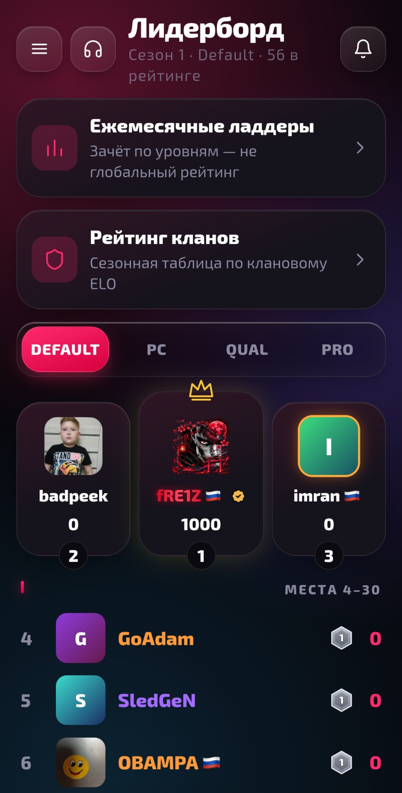
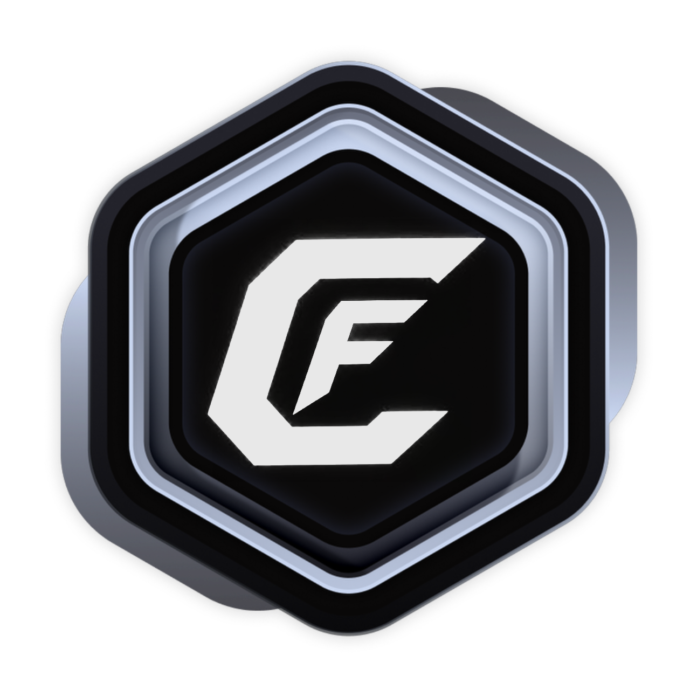
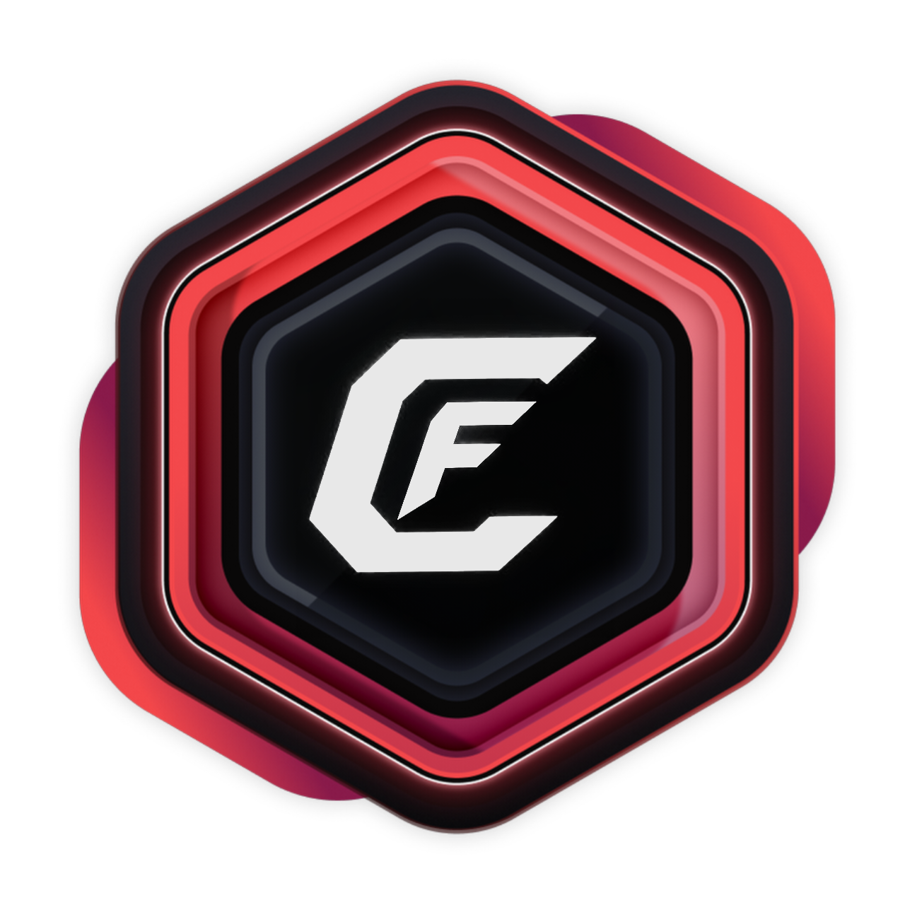

Матчмейкинг, где решает скилл
Собирайте пати, ищите соперников по рейтингу, баньте карты и играйте 5 на 5 или 2 на 2 с командным голосом. Победы, поражения и личная статистика меняют ELO — случайных тиммейтов из публичных лобби здесь нет.

Всё, что нужно для серьёзной катки
Платформа берёт на себя подбор, бан карт, лобби и подсчёт результата. Вам остаётся играть.
Турнирные правила в мобильном приложении
Каждый матч проходит один и тот же путь: подбор, бан карт, лобби, результат, рейтинг. Никаких договорённостей в чате.
Подбор по ELO
Очередь ищет соперников близкого рейтинга и расширяет диапазон, пока вы ждёте. Команды делятся так, чтобы средний рейтинг сторон был как можно ближе.
Пати с друзьями
Зовите друзей по статик ID, собирайте состав до пяти человек и заходите в очередь вместе. Пати не разбивается при формировании команд.
Бан карт капитанами
Четыре карты, три бана по очереди — остаётся одна. Ход длится 30 секунд: по таймауту карта банится автоматически, так что этап никогда не зависает.
Командный голос
Голосовой чат встроен в приложение: отдельная комната на пати и на каждую команду в матче. Микшер громкости, мут в один тап, сторонние приложения не нужны.
Лидерборд и сезоны
Таблица лидеров по каждой лиге и сезону, ранг в профиле, история матчей с K/D/A и дельтой рейтинга за каждую игру.
Магазин и косметика
Рамки, баннеры, флаги, эмодзи и цвет ника за Cyber Coin. Чёрный рынок открывается по расписанию со скидками 40–70%.
От очереди до рейтинга — пять шагов
Сервер ведёт матч сам: у каждой фазы есть таймер и правило выхода.
Очередь
Выбираете лигу и жмёте «Найти матч». Приложение показывает, сколько людей в игре и в поиске прямо сейчас.
Подтверждение
Матч собран — все игроки подтверждают участие за 30 секунд. Кто-то отказался: остальные возвращаются в очередь без потери места.
Бан карт
Капитаны по очереди убирают карты, пока не останется одна. Капитана выбирает жребий: чаще им становится самый опытный игрок команды.
Лобби
Сервер случайно выбирает хоста из двух капитанов и раскрывает его игровой ID из CounterFlame. Копируете, заходите в лобби, играете.
Результат
Любой из участников загружает скриншот таблицы. Счёт распознаётся автоматически, команды голосуют, модератор подтверждает — и ELO пересчитывается.
Понятная система: ELO, уровни, сезоны
Никаких скрытых коэффициентов. Начисление очков зависит от исхода матча и вашего личного вклада в игру.
Старт с 0 ELO
Новый игрок и новый сезон начинаются с 0 очков и первого уровня. Ниже нуля рейтинг не опускается.
ELO по статистике
Победа +25 / поражение −18, плюс бонус −6…+12 за (K+Д), помощь, урон за раунд и %ГЛ.
Десять уровней
Уровень пересчитывается после каждого матча и может падать — он отражает текущий рейтинг, а не сумму сыгранного.
Сезоны и ладдеры
Сезон обнуляет статистику, но не удаляет историю — прошлые сезоны остаются в профиле. Внутри месяца работают ладдеры по группам уровней.

Три лиги, свой рейтинг в каждой
Статистика считается отдельно по каждой лиге и сезону — переход в другую лигу не переносит ELO.

DEFAULT
Открытый рейтинговый матчмейкинг. Выдаётся всем игрокам сразу после регистрации.

QUAL
Покупается в магазине или открывается бесплатно за топ-30 месячного ладдера 8–10 уровня.

PRO
Закрытая элитная лига — доступ выдаётся вручную.
Значок PC или Телефон в профиле
В приложении игрок сам выбирает платформу, с которой играет — в лобби и профиле рядом с ником отображается значок PC или Телефона.
Активный пул карт
Четыре карты — после трёх банов всегда остаётся ровно одна. Играть только на любимой карте не выйдет.
Результат нельзя подделать в одиночку
Матч закрывается только тогда, когда его подтвердили обе стороны и живой модератор.
01 Скриншот вместо честного слова
Итог матча подтверждается скриншотом таблицы. Один и тот же файл нельзя переиспользовать в другом матче — проверка идёт по хешу.
02 Голосование обеих команд
Скриншот уходит на голосование всем участникам матча. Пока стороны не согласятся, матч не двигается дальше.
03 Ручная модерация
Финальные K/D/A и счёт вносит модератор. Только после этого начисляется рейтинг — отменить уже проверенный матч голосованием нельзя.
04 Жалобы и блокировки
На игрока можно пожаловаться прямо из матча: читы, токсичность, руин, выход из игры.
Профиль, который видно
Рамка, баннер, флаг региона, эмодзи и цвет ника — всё это видно соперникам в лобби и в таблице лидеров.

Коротко о главном
Соберите свою пятёрку
CyberFaceit уже доступен для Android в RuStore, через Telegram и прямо в браузере на любом устройстве.